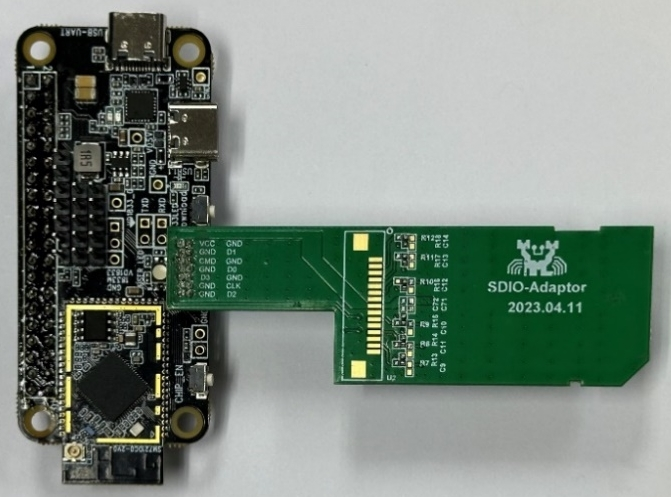
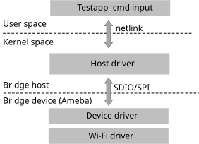
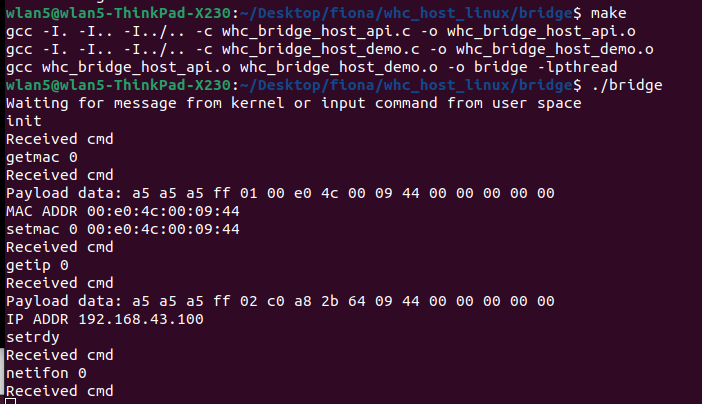
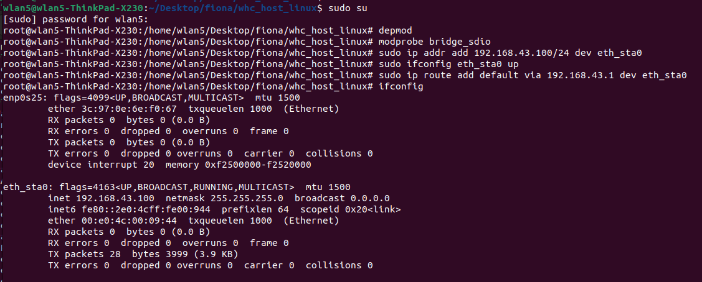

支持的IC
Ameba SoC |
RTL8721Dx |
RTL8726EA |
RTL8720EA |
RTL8730E |
|---|---|---|---|---|
Supported |
Y |
N |
N |
N |
WiFi bridge 架构
WiFi bridge 的架构图如下图所示.

SDIO bridge architecture
WiFi Bridge 传输接口
Ameba SoC |
Interface |
Wi-Fi |
BT |
|---|---|---|---|
RTL8721Dx
RTL8711Dx
|
SDIO |
|
|
SPI |
|
|
|
USB |
X |
X |
|
UART |
X |
X |
|
SDIO (Wi-Fi) + UART (BT) |
|
|
|
SPI (Wi-Fi) + UART (BT) |
|
|
|
USB (Wi-Fi) + UART (BT) |
X |
X |
Ameba SoC |
Interface |
Wi-Fi |
BT |
|---|---|---|---|
RTL8721Dx
RTL8711Dx
|
SDIO |
|
|
SPI |
|
|
|
USB |
X |
X |
|
UART |
X |
X |
|
SDIO (Wi-Fi) + UART (BT) |
|
|
|
SPI (Wi-Fi) + UART (BT) |
|
|
|
USB (Wi-Fi) + UART (BT) |
X |
X |
Ameba SoC |
Interface |
Wi-Fi |
BT |
|---|---|---|---|
RTL8721Dx
RTL8711Dx
|
SDIO |
|
X |
SPI |
X |
X |
|
USB |
X |
X |
|
UART |
X |
X |
|
SDIO (Wi-Fi) + UART (BT) |
X |
X |
|
SPI (Wi-Fi) + UART (BT) |
X |
X |
|
USB (Wi-Fi) + UART (BT) |
X |
X |
WiFi Bridge 的特点
Features |
Linux host |
FreeRTOS host |
|---|---|---|
Wi-Fi API |
FreeRTOS Wi-Fi APIs |
FreeRTOS Wi-Fi APIs |
Wi-Fi mode |
|
|
Wi-Fi security |
|
|
Wowlan |
Y |
Y |
Bluetooth features |
|
|
WiFi Bridge 文件目录
├─ whc
│ ├─ README.md
│ ├─ whc_def.h
│ ├─ whc_dev
│ │ ├─ sdio
│ │ │ ├─ whc_bridge_sdio_dev.c
│ │ │ ├─ whc_bridge_sdio_dev.h
│ │ │ ├─ whc_fullmac_sdio_dev.c
│ │ │ ├─ whc_fullmac_sdio_dev.h
│ │ │ ├─ whc_sdio_drv.c
│ │ │ └─ whc_sdio_drv.h
│ │ ├─ spi
│ │ │ ├─ whc_bridge_spi_dev.c
│ │ │ ├─ whc_bridge_spi_dev.h
│ │ │ ├─ whc_fullmac_spi_dev.c
│ │ │ ├─ whc_fullmac_spi_dev.h
│ │ │ ├─ whc_spi_dev.c
│ │ │ └─ whc_spi_dev.h
│ │ ├─ usb
│ │ │ ├─ whc_usb_dev.c
│ │ │ └─ whc_usb_dev.h
│ │ ├─ whc_bridge_dev_api.c
│ │ ├─ whc_bridge_dev_api.h
│ │ ├─ whc_dev.h
│ │ ├─ whc_dev_api.c
│ │ ├─ whc_dev_api.h
│ │ ├─ whc_dev_app.c
│ │ ├─ whc_dev_bridge.c
│ │ ├─ whc_dev_bridge.h
│ │ ├─ whc_dev_cust_evt.c
│ │ ├─ whc_dev_cust_evt.h
│ │ ├─ whc_dev_msg_queue.c
│ │ ├─ whc_dev_msg_queue.h
│ │ ├─ whc_dev_protocal_offload.c
│ │ ├─ whc_dev_protocal_offload.h
│ │ ├─ whc_dev_struct.h
│ │ ├─ whc_dev_trx.c
│ │ ├─ whc_dev_trx.h
│ │ ├─ whc_ipc.h
│ │ ├─ whc_ipc_cfg.h
│ │ ├─ whc_ipc_dev_api.c
│ │ ├─ whc_ipc_dev_trx.c
│ │ ├─ whc_ipc_dev_trx.h
│ │ └─ whc_ipc_device.c
│ ├─ whc_host
│ │ ├─ spi
│ │ │ ├─ whc_spi_host.c
│ │ │ ├─ whc_spi_host.h
│ │ │ ├─ whc_spi_host_trx.c
│ │ │ └─ whc_spi_host_trx.h
│ │ ├─ whc_host.h
│ │ ├─ whc_host_api.c
│ │ ├─ whc_host_api.h
│ │ ├─ whc_host_api_basic.c
│ │ ├─ whc_host_api_ext.c
│ │ ├─ whc_host_cust_evt.c
│ │ ├─ whc_host_cust_evt.h
│ │ ├─ whc_ipc_host.c
│ │ ├─ whc_ipc_host_api.c
│ │ ├─ whc_ipc_host_api_basic.c
│ │ ├─ whc_ipc_host_api_ext.c
│ │ ├─ whc_ipc_host_trx.c
│ │ ├─ whc_ipc_host_trx.h
│ │ ├─ whc_ipc_host_zephyr.c
│ │ └─ whc_rtos
│ │ ├─ os_wrapper_memory.c
│ │ ├─ os_wrapper_mutex.c
│ │ └─ os_wrapper_semaphore.c
│ ├─ whc_ipc_msg_queue.c
│ └─ whc_ipc_msg_queue.h
├─ cfg80211_fullmac
│ ├─ Kconfig
│ ├─ Makefile
│ ├─ bridge
│ │ ├─ Makefile
│ │ ├─ rtw_bridge_api.c
│ │ ├─ rtw_bridge_api.h
│ │ ├─ rtw_bridge_app.c
│ │ ├─ rtw_bridge_llhw_app.c
│ │ ├─ rtw_bridge_llhw_event_tx.c
│ │ ├─ rtw_bridge_llhw_pkt_rx.c
│ │ ├─ rtw_bridge_netlink.h
│ │ ├─ sdio_bridge
│ │ │ └─ Kbuild
│ │ └─ whc_bridge_host_demo.c
│ ├─ common
│ │ ├─ autoconf.h
│ │ ├─ netdev
│ │ │ ├─ rtw_cfg80211_fullmac.h
│ │ │ ├─ rtw_drv_probe.c
│ │ │ ├─ rtw_drv_probe.h
│ │ │ ├─ rtw_ethtool_ops.c
│ │ │ ├─ rtw_ethtool_ops.h
│ │ │ ├─ rtw_functions.h
│ │ │ ├─ rtw_netdev_ops.c
│ │ │ ├─ rtw_netdev_ops.h
│ │ │ └─ rtw_wiphy.h
│ │ ├─ rtw_llhw_event.h
│ │ ├─ rtw_llhw_hci.c
│ │ ├─ rtw_llhw_hci.h
│ │ ├─ rtw_llhw_memory.c
│ │ ├─ rtw_llhw_ops.c
│ │ ├─ rtw_llhw_pkt_tx.c
│ │ ├─ rtw_llhw_trx.h
│ │ ├─ sdio
│ │ │ ├─ rtw_sdio.h
│ │ │ ├─ rtw_sdio_drvio.c
│ │ │ ├─ rtw_sdio_drvio.h
│ │ │ ├─ rtw_sdio_fwdl.c
│ │ │ ├─ rtw_sdio_init.c
│ │ │ ├─ rtw_sdio_ops.c
│ │ │ ├─ rtw_sdio_ops.h
│ │ │ ├─ rtw_sdio_probe.c
│ │ │ └─ rtw_sdio_reg.h
│ │ ├─ spi
│ │ │ ├─ rtw_spi.h
│ │ │ ├─ rtw_spi_ops.c
│ │ │ ├─ rtw_spi_probe.c
│ │ │ └─ spidev-overlay.dts
│ │ └─ usb
│ │ ├─ rtw_usb.h
│ │ ├─ rtw_usb_ops.c
│ │ └─ rtw_usb_probe.c
WiFi Bridge 硬件配置
接口连接
下表所示是Ameba 和 Raspberry Pi的pin脚连接。
Interface |
SoC |
Function |
Description |
|---|---|---|---|
SDIO |
PB6 |
SDIO_DAT2 |
SDIO pins |
PB7 |
SDIO_DAT3 |
||
PB8 |
SDIO_CMD |
||
PB9 |
SDIO_CLK |
||
PB13 |
SDIO_DAT0 |
||
PB14 |
SDIO_DAT1 |
||
SPI |
PB24 |
SPI_MOSI |
SPI pins |
PB25 |
SPI_MISO |
||
PB23 |
SPI_CLK |
||
PB26 |
SPI_CS |
||
PB8 |
DEV_TX_REQ |
||
PB9 |
DEV_READY |
||
USB??? |
PB6 |
SDIO_DAT2 |
SDIO_DAT2 |
PB7 |
SDIO_DAT3 |
SDIO_DAT3 |
|
PB8 |
SDIO_CMD |
SDIO_CMD |
|
PB9 |
SDIO_CLK |
SDIO_CLK |
|
PB13 |
SDIO_DAT0 |
SDIO_DAT0 |
|
PB14 |
SDIO_DAT1 |
SDIO_DAT1 |
|
UART |
PB14 |
SDIO_DAT1 |
SDIO_DAT1 |
PB14 |
SDIO_DAT1 |
SDIO_DAT1 |
Interface |
Raspberry Pi |
Function |
Description |
|---|---|---|---|
SDIO |
GPIO 26 |
SDIO_DAT2 |
SDIO pins |
GPIO 27 |
SDIO_DAT3 |
||
GPIO 23 |
SDIO_CMD |
||
GPIO 22 |
SDIO_CLK |
||
GPIO 24 |
SDIO_DAT0 |
||
GPIO 25 |
SDIO_DAT1 |
||
SPI |
GPIO 10 |
SPI_MOSI |
SPI pins |
GPIO 9 |
SPI_MISO |
||
GPIO 11 |
SPI_CLK |
||
GPIO 8 |
SPI_CS |
||
GPIO 23 |
DEV_TX_REQ |
||
GPIO 22 |
DEV_READY |
||
USB??? |
GPIO 26 |
SDIO_DAT2 |
SDIO_DAT2 |
GPIO 27 |
SDIO_DAT3 |
SDIO_DAT3 |
|
GPIO 23 |
SDIO_CMD |
SDIO_CMD |
|
GPIO 22 |
SDIO_CLK |
SDIO_CLK |
|
GPIO 24 |
SDIO_DAT0 |
SDIO_DAT0 |
|
GPIO 25 |
SDIO_DAT1 |
SDIO_DAT1 |
|
UART |
GPIO 25 |
SDIO_DAT1 |
SDIO_DAT1 |
GPIO 25 |
SDIO_DAT1 |
SDIO_DAT1 |
备注
SPI DEV_TX_REQ: Ameba 使用这跟pin的上升延告诉HOST自己有数据要发送。
- SPI DEV_READY: Ameba 使用这跟pin的高低电平告诉HOST自己是否已经准备好接收数据。
1: Device 准备好接收数据.
0: Device 忙碌，无法接收数据.
备注
以上Ameba的SDIO pin是 SDK的默认pin脚，如果开发者使用另外的pin脚做SDIO，则需要修改如下文件中函数
SPDIO_Board_Init的SDIOpinmux配置。component/soc/amebadplus/hal/src/spdio_api.c
目前Host端的SDIO interrupt实现的是标准SDIO 中断模式, SDIO_DATA1必须配置为SDIO而不是GPIO。如果Host端不支持SDIO 中断，开发者可以考虑使用polling模。
SDIO转接板
由于SDIO 飞线可能会导致信号传输质量差，无法使用较高的频率传输。可以购买SDIO转接板连接到Ameba的SDIO pin脚，如下图所示：

FullMAC SDIO 转接板
{kind=link}
备注
瑞昱的SDIO转接板也即将上线销售，当前可以先直接联系<claire_wang@realsil.com.cn>索取。
树莓派
为了实现高速传输，建议将Amaba Demo板的 SDIO pin脚直接焊接到树莓派对应的pin脚，如下图所示：

connection with Raspberry Pi
WiFi Bridge Device 驱动移植指南
在工程目录（比如
{SDK}/amebadplus_gcc_project）中执行./menuconfig.py找到 , 选择需要的接口：

执行make产生image.
使用image tool下载image到Demo板。
WiFi Bridge Host 驱动移植指南
Host driver has been tested and verified to work on Linux kernel version v5.4. If you encounter any compilation errors on other kernel versions, please contact us.
Install build-essential
$sudo apt-get install build-essential
Enter
{SDK}/component/wifi/cfg80211_fullmac, and execute the following command./fullmac_setup.sh sdiobridge
Enter
{SDK}/component/wifi/cfg80211_fullmac, and execute the following command to choose target device icmake menuconfig
Copy
cfg80211_fullmacfolder to host sideBuild and install host driver as below
$cd {driver_path}/cfg80211_fullmac $make $sudo systemctl stop dhcpcd.service $sudo insmod sdio_bridge/bridge_sdio.ko
{driver_path}is the path where you put thecfg80211_fullmacfolder.
After these steps, there will be an interface named eth_sta0, which can be found by command ifconfig.
Host driver has been tested on Raspberry Pi 4.
You can use dtoverlay command to configure SDIO on Raspberry Pi, please input the following command in Raspberry Pi:
dtoverlay sdio poll_once=off
The subsequent steps are the same as descripted in list host porting guide.
WiFi Bridge Linux 测试
APP 架构
APP封装了一些WIFI 操作比如：连线，扫描，让Host可以控制Ameba的行为。
APP使用 netlink 实现APP和底层通信，当底层驱动收到相关的命令之后, 会通过接口传给SoC让SoC执行相应的操作，反向亦然。
{kind=link}

testapp control flow
APP 支持的命令
Command |
Description |
|---|---|
wifi_connect param1 param2 |
Connect to AP.
|
disconnect |
Disconnect to AP |
scan |
Trigger scan |
scanres |
Get and print scan result |
APP 的编译和执行
复制
sdio_bridge/bridge_api到Host Kernel编译执行bridge，然后就可以输入相关的指令了
$cd sdio_bridge/bridge_api/testapp $make $sudo ./bridge

testapp control flow

ifconfig result
{kind=link}
{kind=link}
APP 测试过程
确保host 驱动正确编译并加载，APP正确编译之后，执行如下步骤测试数据通路：
sudo ./bridgescan触发WiFi 扫描scanres获取扫描列表wifi_connect target_ssid password连接AP, 连线成功之后IP地址也会自动获取ifconfig检查eth_sta0的IP地址是否已经正确获取
之后可以执行 ping 后者 iperf 命令测试数据通路
WiFi Bridge 吞吐量
Item |
Bandwidth 20M |
|---|---|
TCP TX |
42Mbps |
TCP RX |
42Mbps |
UDP TX |
53Mbps |
UDP RX |
52Mbps |
测试场景:
Image2 running on PSRAM
AP: xiaomi AX3000
Host 平台: Linux PC